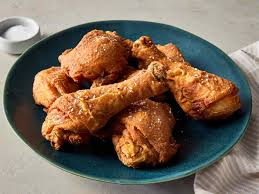
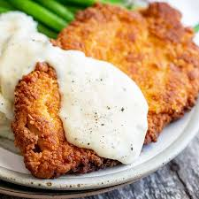
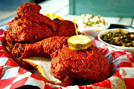
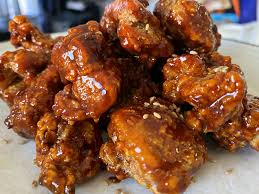
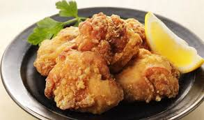
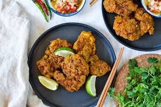

The American classic. Chicken pieces are typically marinated in buttermilk, dredged in seasoned flour, and deep-fried or pan-fried until ultra-crispy.
Rp 37.000

A boneless breast pounded thin, breaded, and fried exactly like chicken-fried steak, often smothered in creamy white country gravy.
Rp 40.000

A Southern variation where the fried chicken is heavily coated in a fiery cayenne pepper and lard paste, usually served on white bread with pickles.
Rp 21.000

Known for its incredibly thin, shatteringly crisp crust. It is typically double-fried, then either tossed or brushed with sweet and spicy gochujang-based glazes (Yangnyeom) or left plain (Fried/Dak-gangjeong).
Rp 55.000

Bite-sized chunks of chicken marinated in soy sauce, ginger, and garlic, then tossed in potato or cornstarch before a quick fry. It is light, crispy, and typically served with lemon.
Rp 45.000

Often simmered first in aromatics like coconut milk, lemongrass, and galangal before being fried to a caramelized finish.
Rp 45.000